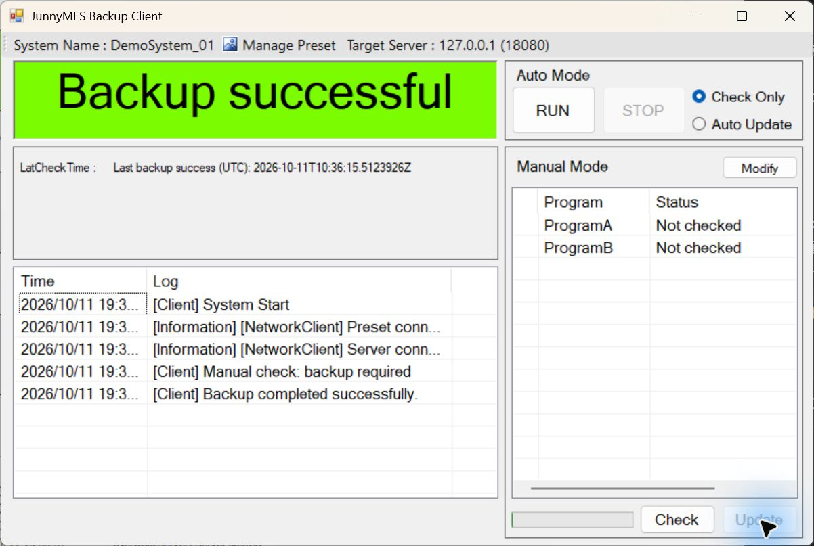
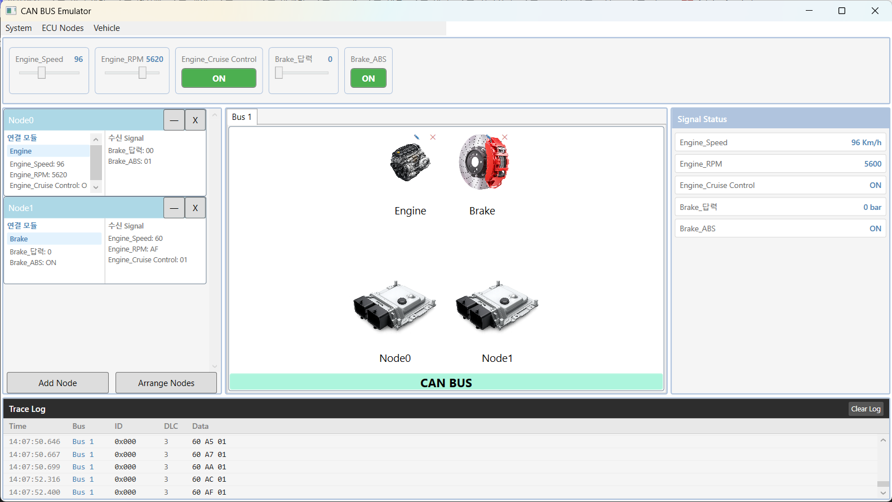
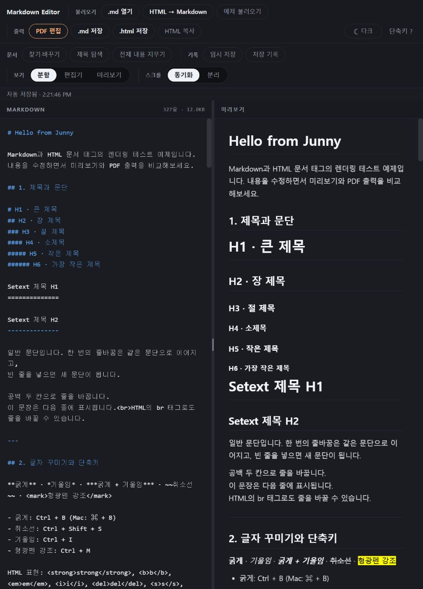
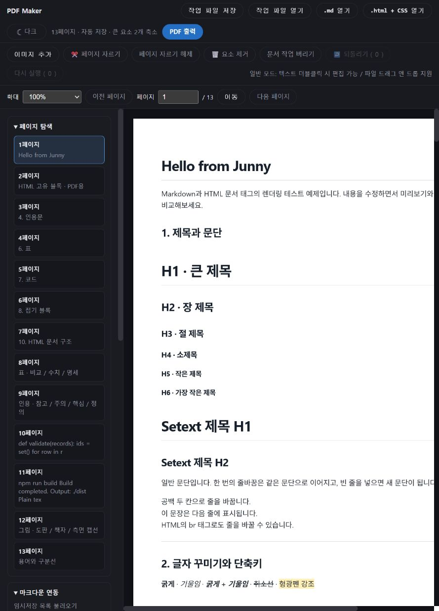
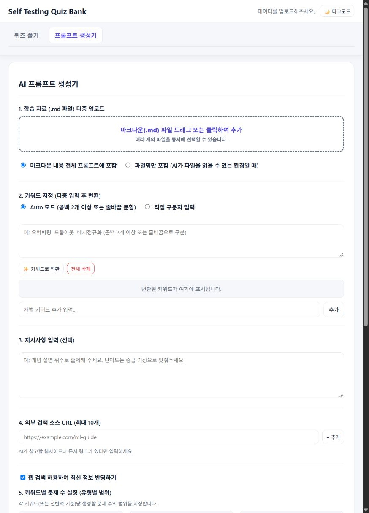

원리
단순히 오류를 대응하는 것이 아닌 그 속의 원리, 설계의 이유를 먼저 확인합니다.
MES · SYSTEM INTEGRATION · SOFTWARE
Back to the Basics — 복잡한 문제일수록 원리부터.
안녕하세요, 김준호입니다.
3년간의 MES 운영 경험을 바탕으로, 현장의 문제를 원리부터 분석하고 소프트웨어 구조로 옮기고 있습니다.
00 / ABOUT MY APPROACH
Back to the Basics는 아버지에게서 물려받아 어린 시절부터 지켜온 좌우명입니다.
새로운 기술을 배울 때도, 문제를 해결할 때도
먼저 전체 흐름과 작동 원리를 이해하려 합니다.
MES를 운영할 때는 SQL의 처리 순서와 설비 신호의 시점을 함께 살폈습니다. C#을 처음 공부할 때는 문법을 익히는 데서 멈추지 않고 파일 검사부터 전송·보관까지 백업 프로그램의 전체 구조를 직접 만들었습니다.
저에게 기본기는 단순한 암기가 아닙니다. 각 요소가 어떤 책임을 가지고 어떻게 연결되는지 설명할 수 있는 능력입니다. 기술이 바뀌어도 이 기준으로 배우고 개선하려 합니다.
단순히 오류를 대응하는 것이 아닌 그 속의 원리, 설계의 이유를 먼저 확인합니다.
코드와 데이터가 실제 작업·설비에 미치는 영향을 봅니다.
드물게 발생하는 예외도 조건을 좁혀 이해하려 합니다.
복잡한 요구와 흐름을 상태·책임·규칙으로 정리합니다.
01 / SELECTED WORK
업무와 학습에 필요했던 도구를 만들고, 사용하며 개선한 과정을 담았습니다.
IPC 백업 도구와 CAN 통신 흐름을 구현한 C# 프로젝트입니다.

파일 검사부터 전송·보관까지 연결한 Client–Server 프로그램입니다.
반복되는 IPC 백업 업무를,
직접 설계한 프로그램으로.
C#을 처음 공부하며 검색과 문서만 참고해 AI 없이 직접 만든 Client–Server 도구입니다. 파일 Hash로 변경분을 판별해 전송하고, 제조현장에서 백업에 활용했습니다. 이후 설정·저장·통신·공통 화면을 나누고 파일 버전 보관과 프리셋 편집을 보완했습니다.
현재 공개본은 같은 PC에서 실행하는 Client–Server 데모로 구성했습니다.

신호가 프레임이 되고,
다른 ECU에 도달하기까지.
CAN 하드웨어 없이 ECU와 모듈을 구성하고, 조작한 값이 프레임으로 전달되는 과정을 보여주는 WPF 도구입니다. ISignalBus로 가상 버스의 계약을 분리하고, 수신 Raw 값과 물리값·프레임 로그를 함께 볼 수 있도록 구성했습니다.
C# 이벤트로 ECU 사이의 프레임 전달을 구현한 가상 버스입니다.
기능과 사용 흐름을 설계하고, AI와 함께 구현한 웹 도구입니다. 문서 작성과 학습 과정에서 직접 필요했던 기능을 하나씩 연결했습니다.

작성·미리보기·HTML 가져오기·출력으로 이어지는 문서 편집 흐름을 기능 명세로 정리한 웹 도구입니다.

Markdown·HTML을 불러와 표지, 목차, 페이지 구성과 인쇄까지 연결하도록 기획한 문서 제작 도구입니다.

JSON 문제집 업로드부터 문제 풀이·채점·오답 확인까지의 학습 흐름을 설계한 도구입니다.
02 / ENGINEERING NOTES
만들면서 마주한 실패와 설계 판단을 기록합니다. 현장 경험이 코드의 기준으로 이어지는 과정입니다.
03 / FIELD EXPERIENCE
MES 운영과 서비스 기획에서 맡았던 업무, 그리고 문제를 함께 확인하고 정리해 온 방식을 소개합니다.
브레이너 컨설턴시 소속 · 현대모비스 미국 조지아 생산법인 파견
자동차 모듈 생산현장에서 MES 운영과 장애 대응을 맡았습니다. 생산 흐름, SQL 데이터와 설비 동작을 함께 확인하며 오류 조건을 분석하고, 생산·설비·IT·개발 담당자와 대응 방향을 조율했습니다.
케이브레인 컴퍼니 · WEVEN R&D팀
웹빌더 쇼핑몰의 업무 규칙과 사용자 요구를 정리하고 개발팀과 검토했습니다. 기능을 정의하는 단계부터 실제 사용자의 피드백을 반영하는 과정까지 참여했습니다.
HOW I WORK
운영 장애를 다룰 때도, 새로운 기능을 검토할 때도 같은 순서로 문제를 좁혔습니다.
화면의 증상만으로 판단하지 않고 발생 시간, SQL 처리 순서와 설비 동작을 대조했습니다. DB 조회 문제와 PLC·AMR 연계에서도 먼저 어떤 순서가 어긋나는지 확인했습니다.
담당 시스템이 다른 사람들과 발생 조건과 확인 범위를 공유했습니다. 각자 정상이라고 보는 로직도 같은 상황에서 함께 관찰하며 재현 조건과 조정할 지점을 좁혔습니다.
서비스 기획에서는 상태와 전이 규칙을, 운영 업무에서는 확인 순서와 사용 방법을 정리했습니다. OJT에서도 개별 메뉴보다 생산 흐름과 MES의 역할을 먼저 설명했습니다.
04 / SKILLS & EXPERIENCE
직접 개발한 기술과 현장에서 운영·분석한 기술, 현재 학습 중인 분야를 함께 정리했습니다.
백업 도구를 초기 설계부터 직접 구현하고 실제 현장 IPC 백업에 사용했습니다.
직접 설계·개발CAN Emulator에서 데이터 바인딩과 명령을 구성하고, ISignalBus 계약과 DI로 화면·가상 버스의 책임을 분리했습니다.
개인 프로젝트를 통한 학습프로시저와 로그를 분석하고 설비·MES 데이터 흐름, 신규 공정 연계·QA를 지원했습니다.
실무 운영·분석·검증Python으로 데이터·AI를 실습하고, HTML/CSS·JavaScript로 기능을 기획하고 AI와 함께 웹 도구를 만들었습니다.
웹 도구 제작 · 데이터·AI 실습05 / CONTINUOUS LEARNING
현장에서 마주한 질문을 소프트웨어와 데이터의 언어로 풀기 위해 계속 공부하고 있습니다.
Python·자료구조·알고리즘을 바탕으로 데이터 분석과 AI 기초, LLM·RAG 등의 활용을 학습하고 있습니다.
Introduction to Analytics Modeling, Computing for Data Analysis, Data Analytics in Business를 통해 R·Python·SQL과 분석 모델을 학습했습니다.
Fusion 360·3D 프린팅·Arduino를 사용해 설계부터 시제품 제작·개선까지 실습했습니다.
고려대학교 융합경영학부 디지털경영전공 · 학사 · 2023.02 졸업
LET'S TALK
MES · 스마트팩토리 · SI · 소프트웨어 설계에 관한 이야기를 환영합니다.